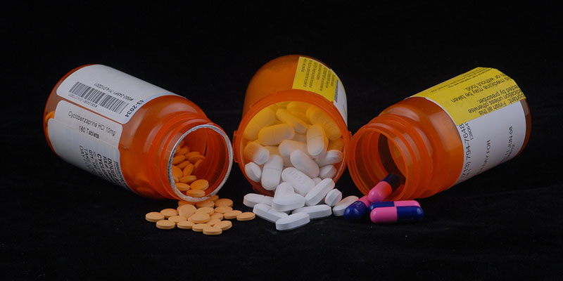

In the past, addiction was viewed as a moral failing or a sign of a weakness. Today, we realize that drug addiction is a devastating, chronic brain disease. Each year, millions of Americans try drugs like alcohol, marijuana, cocaine, or heroin for the first time, and a disturbing percentage of these people will be unable to stop without help. Understanding the causes and consequences of the cycle of addiction is the first step toward recovery.
DRUG CLASSIFICATIONS
There are a wide variety of addictive substances that exist, but the most common types are classified under six main categories: alcohol, benzodiazepines, illicit drugs, opiates, sleeping pills and stimulants.
1. Alcohol :
Alcohol is a legal controlled substance that slows down the body’s vital functions when consumed in excess. Its many forms include beer, wine and liquor. Some of the physical effects of heavy alcohol consumption are slurred speech, loss of coordination and slowed reaction time. Psychological effects include inhibiting judgment and lowering a person’s ability to think rationally. Typically, drinking alcohol in moderation does not signify a problem. However, consuming more than four alcoholic beverages per day for men – or more than three per day for women – can indicate an alcohol use disorder (AUD).
Typically, drinking alcohol in moderation does not signify a problem. However, consuming more than four alcoholic beverages per day for men – or more than three per day for women – can indicate an alcohol use disorder (AUD).
Topics on Alcohol Addiction
Symptoms and Warning Signs
Alcoholism often begins in a person’s early 20s and is characterized by frequent heavy drinking. This behavior leads to an increased tolerance to alcohol and eventually presents social and health problems. Some of the signs of alcohol abuse include:
Slurred speech
Bloodshot eyes
Rambling or repetitive statements
Distorted vision and hearing
Agitation or anxiety
Nausea
Withdrawal and Detox
When an individual develops a tolerance to alcohol over time, they can experience withdrawal symptoms when stopping use. The symptoms of withdrawal are impacted by the amount, frequency and duration of alcohol abuse.
Treatment and Rehab
There are many treatment options available to help a person overcome the toxic cycle of alcohol abuse. It’s important to recover from alcoholism under the supervision of medical professionals.
Drunk Driving
Choosing to drive while intoxicated is often a telltale sign of alcohol abuse. Sadly, getting behind the wheel after drinking can prove to be a deadly mistake. Over 30 percent of all car crashes in 2014 were caused by drunk driving.
Is There A Cure for Alcoholism?
While there is no cure for alcoholism, people can overcome an alcohol addiction by attending a treatment program. Treatment for alcohol abuse can help a person maintain their sobriety and manage alcohol cravings.
2. Benzodiazepines :
Benzodiazepines, or benzos, include pharmaceutical drugs used to treat a wide array of mental disorders, including severe anxiety and panic attacks. People can build a tolerance to benzos if they are consumed for an extended period of time, which can lead to dependency.
Some people choose to take benzos with alcohol, which strengthens its effects and can lead to overdose. Withdrawal from benzos can include dangerous symptoms such as Grand Mal seizures, so it’s always recommended to detox from these drugs under medical supervision.
Comprehensive treatment for a benzodiazepine addiction typically includes cognitive behavioral therapy, support groups and medications to help reduce cravings.
Types of Benzodiazepines

Ativan
Ativan, the brand name for the drug lorazepam, is an intermediate-acting benzodiazepine used to treat anxiety disorders, depression and panic attacks. Ativan is extremely potent when compared to other benzos. Because of this, people who consume Ativan have a high risk of developing an abuse disorder.
Halcion
Halcion is prescribed to treat anxiety and insomnia. As a short-acting medication, Halcion is processed through the body faster than other benzos. As a result, people may be inclined to increase their dose in order to keep experiencing a high, which can lead to an addiction.
Klonopin
Klonopin has a high potential for abuse and addiction – even when prescribed to treat a medical condition. Klonopin is a long-acting benzo, meaning that it takes longer to feel its full effects. Once Klonopin leaves the body, a person can experience severe and potentially life-threatening symptoms of withdrawal.
Valium
Valium is the brand name for diazepam, which is used to treat muscle spasms and seizures. When prescribed, it’s meant to be taken on a daily basis. However, people who start taking more Valium than recommended are at risk of addiction.
Xanax
With over 44 million scripts written every year, Xanax is the most prescribed medication in the country. It is highly addictive when taken in high doses or over an extended period of time. A person struggling with Xanax addiction will typically exhibit symptoms of fatigue and loss of motivation.
3. Illicit Drugs :
Illicit drugs include powerfully addictive and illegal substances such as heroin and meth. The nature of these substances is vastly different from one another.
For example, marijuana’s short-term effects slow down the central nervous system and interfere with a person’s reaction time and concentration. In contrast, cocaine puts brain functioning into hyper speed, resulting in increased alertness and anxiety.
Even just a single use of some of these substances can spawn devastating patterns of abuse. Once a physical or psychological dependence is formed, using illicit drugs takes priority over everything else in a person’s life.
Types of Illicit Drugs
Cocaine
A stimulant with effects similar to excessive amounts of caffeine, cocaine is most often snorted in powder form. This illicit drug is highly addictive and continued abuse can cause severe weight loss and damage to the nasal passages.
Hallucinogens
Hallucinogens are mind-altering, psychoactive substances with a high potential for abuse. These substances are often taken by people looking to distort their perception of reality. Hallucinogens are also sometimes used to self-medicate a mental disorder, such as depression. However, taking hallucinogens for self-medication purposes can make an underlying condition even worse.
Heroin
One of the most addictive substances on earth, heroin is a synthetic derivative of morphine. Heroin comes as either a powder or a sticky gel, known as black tar heroin. Long-term abuse of heroin can cause abscesses and scabs on the skin, in addition to psychological and internal damage.
Inhalants
Inhalants are categorized by their method of administration and include many household objects that can be abused for a brief high. Commonly abused inhalants are nail polish remover, paint thinner, gasoline and lighter fluid. Long-term use of inhalants can cause severe damage including muscle deterioration and psychological disturbances.
Marijuana
As one of the most commonly abused illicit substances, marijuana comes from the cannabis plant and is usually dried out, rolled up and smoked. More commonly known as “weed” or “pot”, marijuana is gaining legal recognition in some states. However, continued abuse of marijuana can cause diminished brain function and lung damage.
4. Opiates :
Opiates encompass prescription drugs that are used to treat acute and chronic pain. While they can be effective when taken as directed, opiates pose a major risk of addiction among their users.
An opiate addiction often manifests itself within a person’s drug-seeking behavior. This can involve visiting multiple doctors in order to obtain more prescriptions – otherwise known as “doctor shopping.” If drugs cannot be obtained through various doctor visits, some people turn to heroin use as a cheaper, easier-to-get alternative.
Withdrawal from opiates can be agonizing and should never be attempted alone. Medically-assisted detox is the safest way to endure the withdrawal process. After detox, it is highly recommended to enter an inpatient addiction treatment program to ensure the lowest chances of relapse.
Types of Opiates
Codeine
Codeine is most often found in over-the-counter and prescription-grade cough medicines. Because of its easy accessibility, many people don’t perceive codeine to be as dangerous as other opiates. In some cases, codeine can act as a gateway drug to harder substances down the road, such as morphine or oxycodone.
Demerol
Demerol is a highly potent opiate with growing rates of addiction. While a prescription of Demerol is legal, it is rarely prescribed outside of intensive hospital care. It has similar effects of other opiates like morphine, putting users in a “dreamlike” state when abused.
Fentanyl
Fentanyl is known to be up to 100 times stronger than morphine and is used primarily to treat pain after surgery. Recreational use of fentanyl is especially dangerous when combined with other opiates or heroin. Fentanyl causes the respiratory system to slow down, leading to overdose and potentially even death.
Morphine
Morphine is primarily prescribed to hospital patients recovering from surgery or diagnosed with cancer. However, a black market for morphine exists due to its intensely pleasurable effects. A person suffering from an addiction to morphine may compulsively seek out and abuse the substance – despite legal ramifications.
Oxycodone
Oxycodone is a powerful painkiller and one of the most abused prescription medications in the United States. Many people unknowingly kickstart an addiction by taking their regularly prescribed dose. Once a tolerance is established, using or obtaining oxycodone may be prioritized over personal obligations and social activities.
5. Sleeping Pills :
Sleeping pills fall under a category of prescription medications known as sedative-hypnotics. Many individuals assume they cannot develop a sleeping pill addiction; however, becoming addicted is easier than most may think.
A dependency on sleeping pills often begins forming when a person increases their prescribed dose without consulting their physician first. They may believe that taking more pills will improve their quality of sleep. Over time, a person will feel the need to take larger amounts each time in order to fall asleep, which often leads to an overwhelming addiction.
When a person who is dependent on sleeping pills tries to quit cold turkey, their body may experience withdrawal. Symptoms of withdrawal can be uncomfortable, so it is best to go through the process at a medical detox center. Further treatment at an inpatient rehab center or outpatient program can address the psychological impact of an addiction to sleeping pills.
Types of Sleeping Pills
Ambien
Ambien is generally prescribed for short-term insomnia. Most cases of Ambien dependence start when a person takes more than their recommended dosage to fall asleep faster. An addiction to Ambien can form in as little as a few weeks.
Amytal
Amytal is the brand name for the barbiturate amobarbital. Because of its level of potency, Amytal is used as a pre-anesthetic for surgeries and to treat chronic sleep disorders. It produces effects that feel similar to alcohol intoxication, which causes users to abuse the medication and subsequently become addicted.
Lunesta
Many people mistakenly believe that Lunesta is a non-habit forming medication. However, Lunesta is a highly potent sleeping pill that can cause a spiraling addiction. Some people who develop a Lunesta dependency will mix the medication with other substances in order to increase its sedative effects.
Sonata
Sonata is a fast-acting sleeping pill that remains in the body for about an hour. This makes Sonata a prime target for accidental abuse, as people might take too much in order to help them sleep. While Sonata isn’t as potent as other sleeping pills, its long-term use can lead to an addiction.
6. Stimulants :
Prescription stimulants include amphetamines and methylphenidates. Typically, stimulants are used to treat mental disorders like attention deficit hyperactivity disorder (ADHD). They are generally used to enhance performance, rather than to achieve a high.
Stimulants work by activating the central nervous system, inciting feelings of excitement and increasing physical and cognitive function. When a person uses these substances, they feel a rush of intense pleasure caused by a surge of dopamine. A tolerance can build up over time from frequent stimulant use, which can signify the early stages of an abuse disorder.
In order to overcome an addiction to stimulants, detox at a treatment center may be required before transitioning into therapy and group support.
Types of Stimulants
Adderall
Adderall is the most commonly prescribed stimulant for treating symptoms of ADHD. People who habitually use Adderall to increase their productivity and improve their mental focus have the highest risk of becoming addicted.
Antidepressants
Unlike other addictive prescription medications, antidepressants don’t produce a “high” or cause intense cravings. In fact, people who have clinical depression typically won’t feel its full effects for over a month. The true danger lies in other substances a person chooses to abuse while taking antidepressants, such as alcohol or benzodiazepines.
Concerta
Concerta is a prescription stimulant similar to cocaine. People who develop a dependence on Concerta will feel strong compulsions to seek out the drug in any way they can. Individuals who cannot obtain more of the drug may experience withdrawal symptoms, which are sometimes referred to as the “Concerta crash.”
Dexedrine
Dexedrine is an amphetamine with a high potential for abuse and addiction. After repeated use of Dexedrine, the brain cannot function normally without the drug. Side effects of Dexedrine include insomnia, blurred vision and dizziness.
Diet Pills
Diet pills include a number of over-the-counter and prescription supplements designed to help users lose weight. Aside from their appetite-suppressant effects, diet pills can cause elevated energy levels and feelings of euphoria, which increase the likelihood of abuse and dependency
In a society that continually promotes alcohol and drug use at every level, the need to provide education on the dangers of alcohol and drug use and its effect on children has never been greater. NCADD believes education on this critical threat needs to